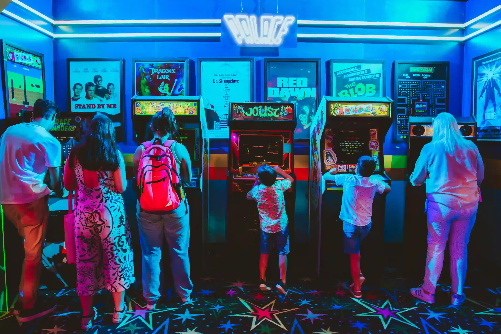
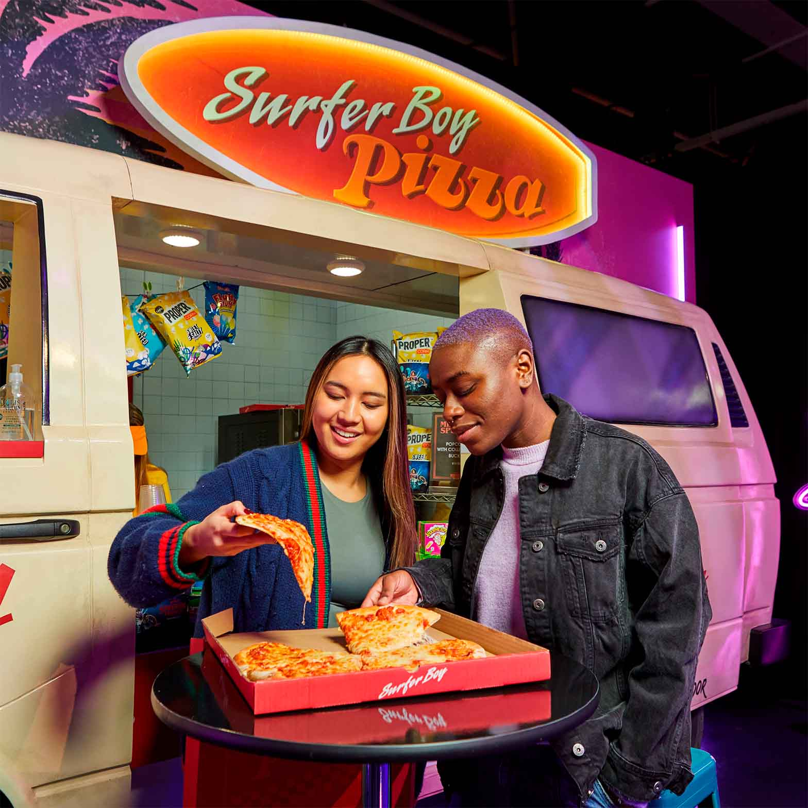

EVENTOS
Experiencias Inmersivas y Exposiciones
- Stranger Things: The Experience: Una exposición que ha estado en varias ciudades alrededor del mundo, permitiendo a los fans explorar el Mundo Invertido y los lugares emblemáticos de la serie, incluyendo una ambientación en los años 80.
- Hawkins en la extraña Pizza Ciudad de México: Un evento reciente que ofrece escenarios temáticos para fotos, mercancía y un combo de pizza para los asistentes.
- Experiencias en Buenos Aires: Se han realizado experiencias que llevan al público a un espacio temático de los 80 y les permiten interactuar con el universo de la serie, de acuerdo con un video de TikTok.

